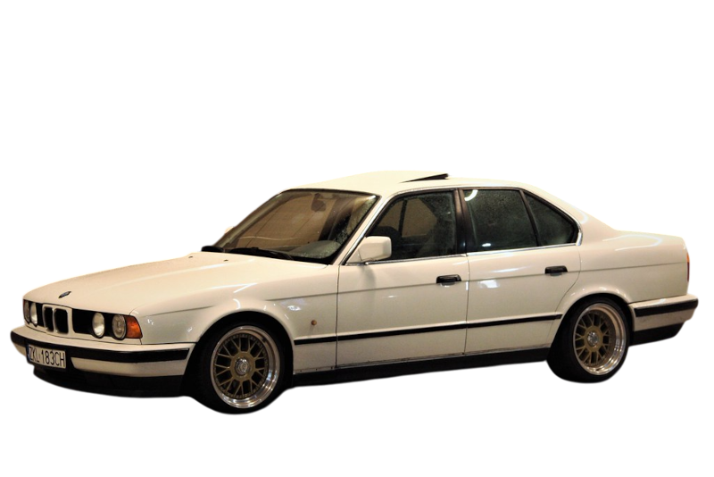

BMW M5 E34: A evolução refinada do pioneiro
Introduzido em 1988, o BMW M5 E34 trouxe sofisticação e desempenho ainda maiores para a linha M. Como sucessor do icônico E28, o E34 manteve a combinação de um sedã executivo com performance esportiva, mas com um refinamento significativo. Equipado inicialmente com o motor S38B36, um seis cilindros em linha de 3.6 litros, ele produzia 315 cv e 360 Nm de torque, permitindo acelerar de 0 a 100 km/h em 6,3 segundos. Em 1992, uma atualização para o motor S38B38 elevou a cilindrada para 3.8 litros e a potência para impressionantes 340 cv, consolidando sua posição como um dos sedãs mais rápidos de sua época.
Design clássico e esportividade discreta
O M5 E34 era uma obra de design elegante, com linhas limpas e proporções equilibradas, típicas do final dos anos 80 e início dos 90. Elementos exclusivos da linha M, como rodas específicas, para-choques redesenhados e os faróis duplos característicos da BMW, davam ao E34 um visual distinto, mas discreto. Por dentro, o luxo era evidente, com acabamentos em couro, detalhes em madeira e bancos esportivos ajustáveis. Ele também inovou ao oferecer, pela primeira vez, uma versão Touring (perua), atendendo aqueles que buscavam esportividade e versatilidade no mesmo pacote.
O elo entre tradição e modernidade
O BMW M5 E34 foi um marco de transição na história da divisão M. Ele manteve o DNA esportivo do E28, mas trouxe avanços tecnológicos e um maior foco em conforto e dirigibilidade. Produzido em menor escala, com cerca de 12.254 unidades fabricadas, o E34 ainda é valorizado por entusiastas e colecionadores que apreciam sua engenharia de precisão e o equilíbrio entre luxo e desempenho. Este modelo consolidou a reputação do M5 como o sedã esportivo definitivo, pavimentando o caminho para as gerações futuras.